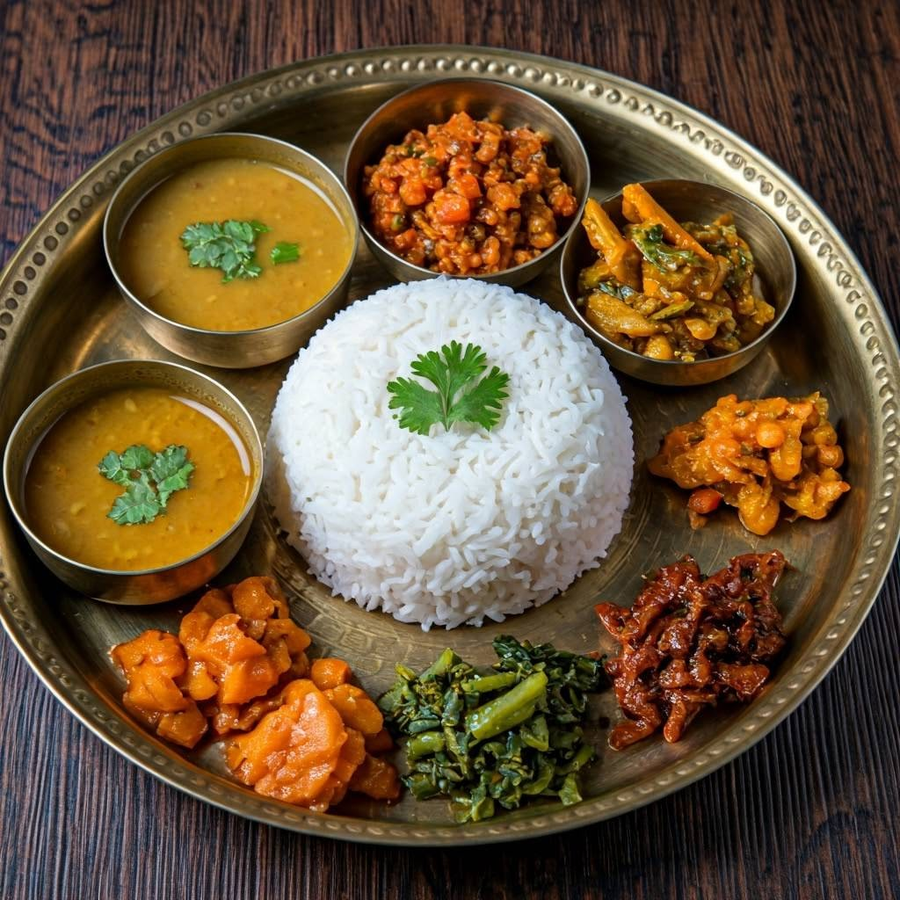
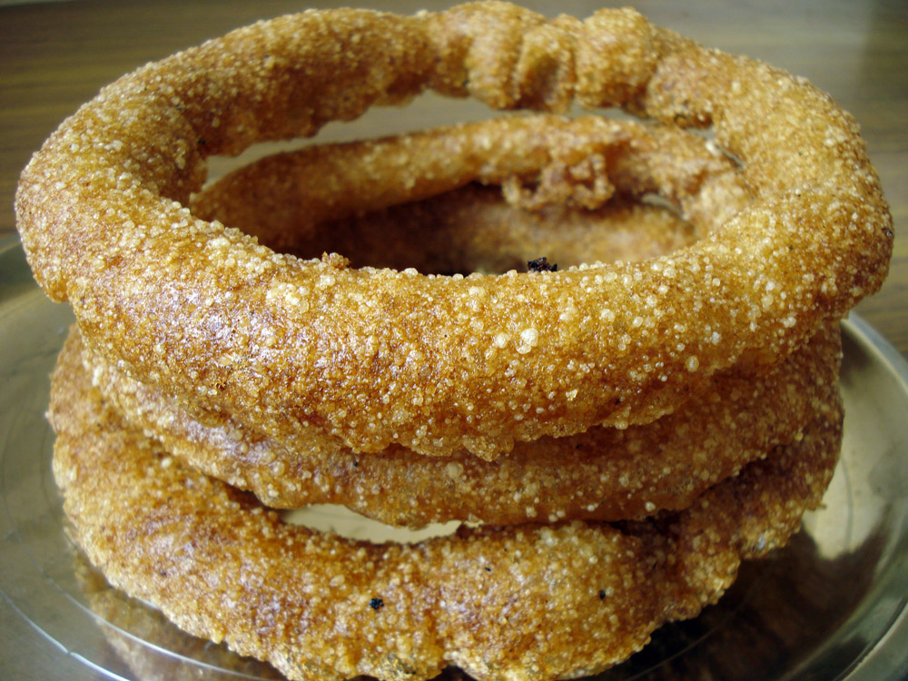
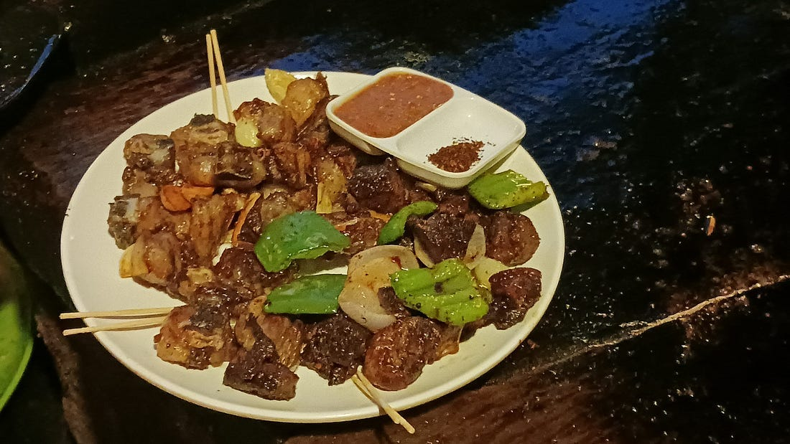
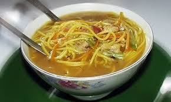
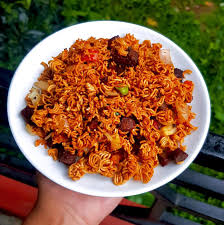
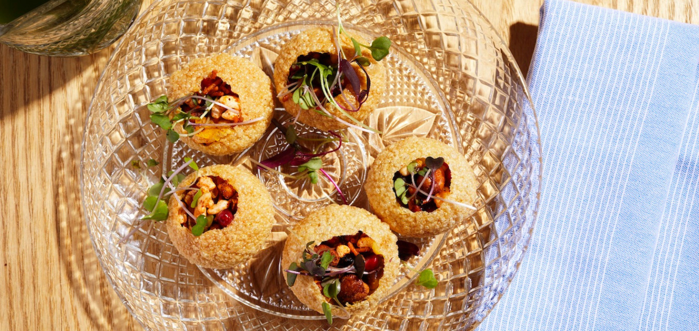
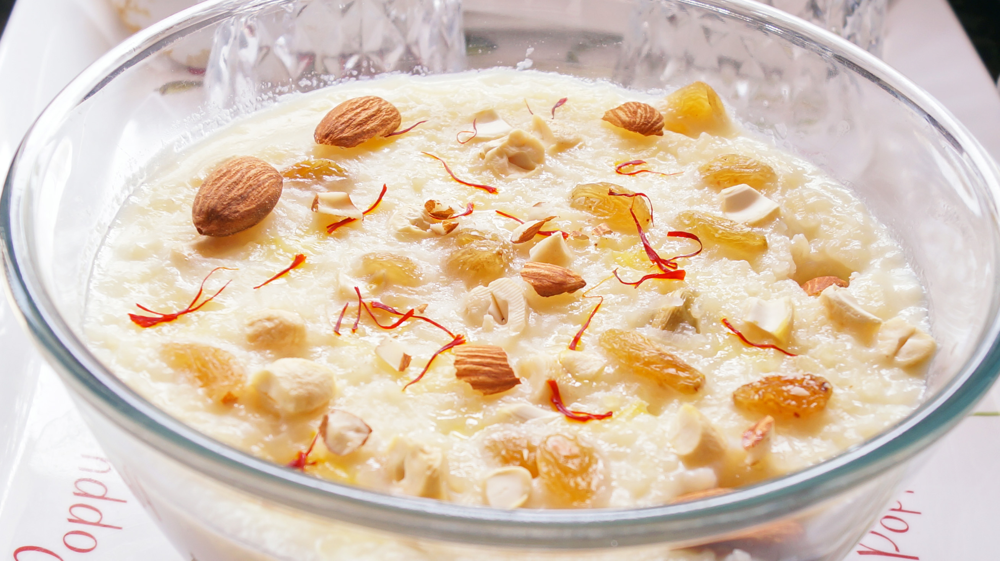

1 tablespoon amchar masala
1 cup brown lentils
1 can crushed tomatoes
1 can tomato paste
1 cauliflower head (cut into bite-size pieces)
1 onion (diced)
2 garlic cloves (minced)
2 cups frozen peas
2 tablespoons vegetable oil
2 tablespoons masala molida (berbere)
1/4 cup plain yogurt (optional)
PIZZA
1 tablespoon amchar masala, 1 cup brown lentils, 1 can crushed tomatoes, 1 can tomato paste, 1 cauliflower head (cut into bite-size pieces), 1 onion (diced), 2 garlic cloves (minced), 2 cups frozen peas, 2 tablespoons vegetable oil, 2 tablespoons masala molida (berbere), 1/4 cup plain yogurt (optional)

Dal Bat
1 cup rice, 1/2 cup lentils (dal), 3 cups water, 1 teaspoon turmeric powder, 1 teaspoon salt, 1 tablespoon oil or ghee, 2 cloves garlic (minced), 1 small onion (chopped), 1 teaspoon cumin seeds, 1 cup seasonal vegetables (optional), fresh coriander leaves for garnish.

Sal Roti
2 cups rice flour, 1/2 cup sugar, 1/2 cup milk, 2 tablespoons ghee, 1/2 teaspoon cardamom powder, 1 ripe banana (optional), 1/2 cup water (as needed), vegetable oil for deep frying.

Choila
500 g grilled buffalo meat or chicken (cut into small pieces), 1 tablespoon mustard oil, 1 teaspoon ginger paste, 1 teaspoon garlic paste, 2 green chilies (chopped), 1 teaspoon chili powder, 1/2 teaspoon turmeric powder, 1 teaspoon cumin powder, 1 tablespoon lemon juice, 1 small onion (sliced), salt to taste, fresh coriander leaves for garnish.

Thukpa
200 g noodles, 1 cup chicken or vegetable broth, 1 small onion (sliced), 2 cloves garlic (minced), 1 teaspoon ginger (grated), 1 carrot (julienned), 1 cup cabbage (shredded), 1/2 cup green beans (chopped), 1 tablespoon soy sauce, 1 teaspoon black pepper, 1 tablespoon cooking oil, salt to taste, fresh coriander leaves for garnish.

Chatpat
2 cups puffed rice (muri/bhuja), 1 boiled potato (diced), 1 small onion (finely chopped), 1 tomato (chopped), 1/2 cup cucumber (diced), 1 green chili (chopped), 2 tablespoons coriander leaves (chopped), 1 tablespoon lemon juice, 1 teaspoon chat masala, 1/2 teaspoon chili powder, salt to taste, 1 packet instant noodles (crushed, optional).

Panipuri
20 puris (crispy hollow shells), 2 medium potatoes (boiled and mashed), 1/2 cup chickpeas (boiled), 1 small onion (finely chopped), 2 tablespoons coriander leaves (chopped), 1 teaspoon chaat masala, 1/2 teaspoon cumin powder, salt to taste, 2 cups mint water (pani), 1 tablespoon tamarind pulp, 1 green chili, 1 tablespoon lemon juice.

Kheer
1/2 cup rice, 1 liter milk, 1/2 cup sugar, 2 tablespoons ghee, 4–5 cardamom pods (crushed), 2 tablespoons cashews (chopped), 2 tablespoons raisins, 2 tablespoons almonds (sliced), a pinch of saffron (optional).